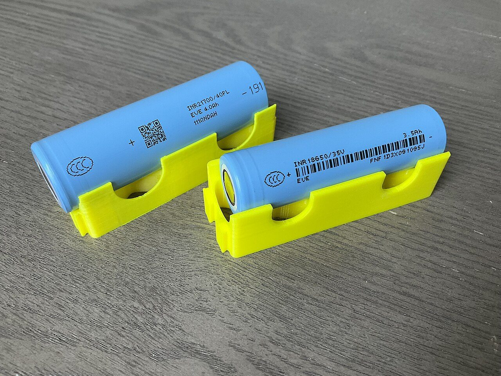

Como funciona uma bateria de íon-lítio e por que o sódio entrou na conversa
Do celular ao carro elétrico, quase tudo que se recarrega usa o mesmo princípio. Entenda o que acontece dentro da bateria, por que ela envelhece e o que muda com as novas químicas, como a de sódio.

A bateria do celular, a do notebook e a do carro elétrico parecem tecnologias diferentes, mas seguem o mesmo princípio. A maioria delas é de íon-lítio, e entender como ela funciona ajuda a perceber por que o tema virou assunto de política industrial, de comércio internacional e até de planejamento da rede elétrica. Também ajuda a entender por que, de repente, as baterias de sódio começaram a aparecer nas notícias.
O que há dentro de uma bateria
Uma célula de íon-lítio tem quatro partes principais. Os dois eletrodos guardam a energia: o ânodo (negativo), em geral feito de grafite, e o cátodo (positivo), feito de um óxido metálico que contém lítio. Entre os dois há um separador, uma membrana fina que impede o contato direto, e um eletrólito, líquido ou gel por onde os íons de lítio conseguem passar.
Como ela carrega e descarrega
Quando a bateria está sendo carregada, a energia da tomada empurra íons de lítio do cátodo, através do eletrólito, até o ânodo, onde eles ficam alojados entre as camadas do grafite. Quando o aparelho está em uso, o processo se inverte: os íons voltam espontaneamente ao cátodo, e os elétrons percorrem o circuito externo, alimentando o aparelho. Os íons são como passageiros que mudam de um prédio para outro, e os elétrons fazem o trabalho no caminho.
Esse vai e vem se repete centenas ou milhares de vezes. O que determina quanta energia cabe na bateria, e quanto tempo ela dura, é a química dos materiais escolhidos.
Por que a bateria envelhece
Com o tempo, a capacidade cai. As causas principais são conhecidas:
- Formação de camadas no ânodo. Parte do lítio reage com o eletrólito e forma uma película que consome íons que deixam de participar do processo.
- Desgaste dos materiais. A cada ciclo, os eletrodos expandem e contraem um pouco, e isso provoca microfissuras.
- Calor. Temperaturas altas aceleram todas as reações indesejadas. É por isso que deixar o celular no sol ou carregá-lo sob o travesseiro encurta a vida útil da bateria.
- Extremos de carga. Manter a bateria sempre em 100% ou deixá-la zerar com frequência costuma desgastá-la mais do que usos intermediários.
As duas famílias mais comuns
Nos carros elétricos e nos eletrônicos, duas químicas de cátodo dominam o mercado.
- NMC (níquel, manganês e cobalto). Guarda mais energia por quilo, o que significa mais autonomia para o mesmo peso. Em compensação, usa metais caros e de cadeia de suprimento sensível, como o cobalto.
- LFP (fosfato de ferro-lítio). Guarda um pouco menos de energia por quilo, mas usa materiais baratos e abundantes, tende a durar mais ciclos e é considerada mais estável termicamente. Por isso tem ganhado espaço em carros de entrada e em armazenamento estacionário.
Por que o cobalto e o lítio viraram assunto geopolítico
A maior parte do cobalto do mundo vem da República Democrática do Congo, em condições de mineração que são alvo frequente de críticas. O lítio é extraído em salares no Chile e na Argentina e em minas de rocha na Austrália, e boa parte do refino acontece na China. O Brasil também tem reservas, em especial no Vale do Jequitinhonha, em Minas Gerais. Quando uma indústria depende de poucos fornecedores, qualquer tensão comercial afeta o preço, e é por isso que governos e empresas procuram alternativas e reciclagem.
Onde entra o sódio
O sódio é um elemento vizinho do lítio na tabela periódica e se comporta de forma parecida. A diferença é que ele é muito mais abundante: está no sal de cozinha e na água do mar. Uma bateria de íons de sódio troca o lítio por sódio e dispensa o cobalto e, em muitos projetos, o níquel. As vantagens prometidas são custo menor, menor dependência de materiais críticos e bom desempenho em temperaturas baixas.
O ponto fraco é que o íon de sódio é maior e mais pesado, e as baterias costumam guardar menos energia por quilo do que as de lítio. Por isso, a tendência é que o sódio brilhe primeiro em usos em que o peso importa menos, como armazenamento fixo, veículos urbanos e equipamentos de menor autonomia. Vale conferir a matéria sobre o movimento da Hyundai em baterias de sódio para acompanhar como a indústria vem testando essa ideia.
Da bateria do carro à rede elétrica
Uma bateria não serve só para movimentar um veículo. Ligada à rede, ela pode armazenar energia quando há sobra, por exemplo em horas de muito sol, e devolvê-la quando a demanda aperta. É o conceito por trás do "everything-to-grid", em que carros elétricos e prédios participam do equilíbrio da rede. Para esse tipo de aplicação, a durabilidade e o custo importam mais do que a densidade de energia, o que dá espaço tanto para as químicas LFP quanto para o sódio.
Dicas práticas para cuidar da sua bateria
- Evite deixar aparelhos em locais quentes, como carros estacionados ao sol.
- Se puder, mantenha a carga entre cerca de 20% e 80% no dia a dia, e deixe a carga cheia para quando precisar.
- Use carregadores de boa procedência, que respeitem as especificações do aparelho.
- Se a bateria estiver inchada, não use e não carregue: leve a um ponto de descarte ou à assistência técnica.
- Descarte as pilhas e baterias em pontos de coleta, nunca no lixo comum.
No fim, nenhuma química resolve tudo. A pergunta útil, quando surge uma notícia sobre "a bateria do futuro", é: para qual uso ela serve? Autonomia máxima, custo baixo, carga rápida e longa vida útil raramente andam juntas, e cada aplicação escolhe a combinação que lhe convém.
Gostou? Receba as próximas.
As notícias internacionais que importam, em português, uma vez por semana.
Assinar a newsletter